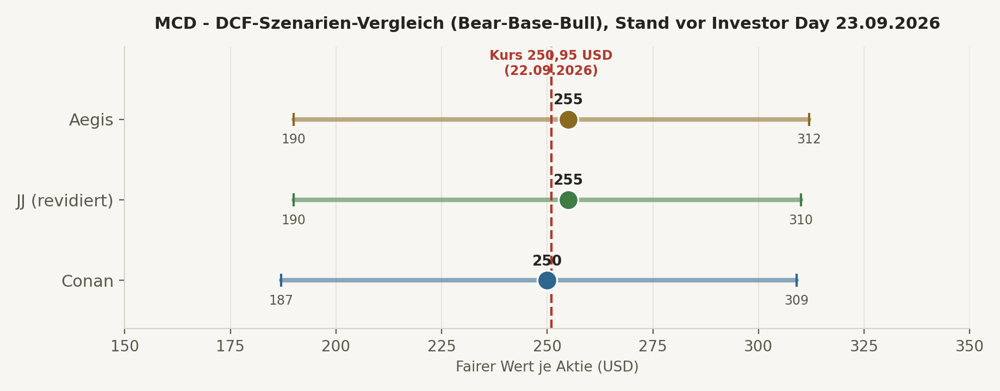
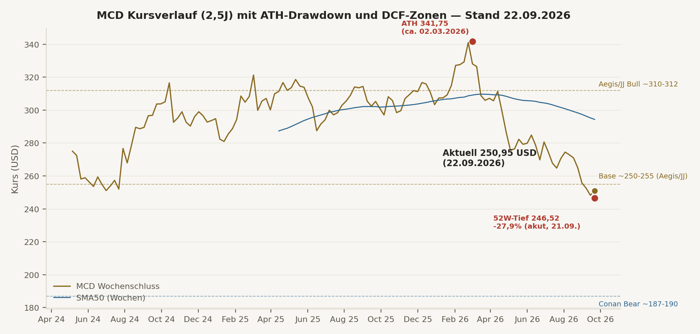

Was MCD ist. Ein globaler Franchise-/Immobilien-Compounder: ~95% der ~44.000+ Restaurants sind franchised, McDonald's verdient primär an Lizenzgebühren und Mieteinnahmen aus eigenen Immobilien, nicht am Burger-Verkauf selbst. Operative Marge 45,7%, FCF-Marge ~28% — beides elite. 50 aufeinanderfolgende Jahre Dividendenerhöhungen, seit 17.09.2026 offiziell "Dividend King". Rendite 3,08%.
Der Haken. Die Aktie steht bei $250,95, ein neues 52-Wochen-Tief, -27,9% vom Allzeithoch ($341,75, März 2026). Grund: eine echte "Value War" mit Taco Bell (+7% Comparable Sales) und Wendy's, während MCDs eigenes US-Geschäft nur +0,8% bei sinkendem Traffic schafft. Nur ~2/3 der US-Franchisenehmer setzen das neue Unter-$3-Menü überhaupt um — ein Franchise-System kann Wertversprechen nicht so einfach durchsetzen wie ein Konzern mit eigenen Filialen.
Der Zeitpunkt. Diese Analyse entsteht einen Tag vor McDonald's erstem Investor Day seit fast 3 Jahren (23.09.2026, Chicago) — CEO Kempczinski und die neu berufene US-Chefin Skye Anderson werden dort Details zur Strategie "McDonald's > NEXT" vorstellen. Diese Analyse ist explizit eine Vor-Event-Momentaufnahme, kein Ersatz für eine Nachprüfung nach dem 23.09.
Der Cross-Check-Befund. JJ präsentierte in Runde 1 fälschlich bereits "bestätigte" Investor-Day-Ergebnisse (der Event hatte noch nicht stattgefunden) und leitete daraus ein KAUFEN-Rating ab — nach Konfrontation mit dem korrekten Datum (23.09., nicht 22.09.) revidierte JJ vollständig auf BEOBACHTEN. Details Seite 2 und 11.
JJ präsentierte den heutigen (22.09.) Investor Day als bereits stattgefunden, mit "bestätigten" Zielen (50.000 Restaurants bis 2028, G&A-Ziele, Loyalty-Nutzerzahlen) und leitete daraus DCF Base $270-300 und Rating KAUFEN ab. Conan recherchierte unabhängig korrekt: der Investor Day ist laut offizieller McDonald's-Pressemitteilung (17.09.) erst morgen, 23.09.2026 — alle "Ziele" sind bislang nur Analysten-Erwartungen. Conan kam auf DCF Base $248-252 und Rating BEOBACHTEN (Kaufzone erst unter $235). Nach Vorlage der korrekten Quelle räumte JJ den Fehler vollständig ein, revidierte auf DCF Base ~$245-265 und Rating BEOBACHTEN — starke Konvergenz nach Korrektur.
BEOBACHTEN
10J-DCF Base $255 · Nachprüfung nach Investor Day nötig
BEOBACHTEN
Base $245-265 (von fälschlich $270-300) · zuvor KAUFEN
BEOBACHTEN
Base $248-252 · Kaufzone <$235, attraktiv <$225
| Kriterium | Ist-Wert | Status |
|---|---|---|
| Operative Marge | 45,7% (H1 2026: 46,2% GAAP / 46,9% Non-GAAP) | ✅ Elite |
| FCF-Marge | ~28,0% (TTM FCF $7,76 Mrd. / Umsatz $27,70 Mrd.) | ✅ Elite |
| ROIC (After-Tax, Unternehmensangabe) | 20,3% (2025), rückläufig von 25,2% (2023) — Trend beobachten | 🟡 Hoch, aber Trend abnehmend |
| Piotroski F-Score (Conan-Schätzung) | 8/9 | ✅ Stark |
| Net-Debt/EBITDA | ~3,5-3,6x inkl. Leases, ~2,6x ex-Lease — hoch, aber durch Franchise-Cashflow-Stabilität getragen | 🟡 Kein Value-Bilanz-Profil, aber kein Abbruchkriterium |
| Umsatzwachstum | TTM +6,3%, Q2 2026 Systemwide +4% (const. currency), globale Comparable Sales +1,3% | 🟡 Solide, aber USA-Komponente schwach |
| EPS-Wachstum | Q2 Adj. EPS $3,38 (+6% YoY), EPS TTM $12,31 (+5,5%) | ✅ Erfüllt |
| Dividenden-Historie | 50 aufeinanderfolgende Jahre Erhöhungen — offiziell "Dividend King" (17.09.2026), zuletzt +4% auf $1,93/Quartal | ✅ Erfüllt, außergewöhnlich |
| SBC/Dilution | Aktienzahl sinkt weiter (Buybacks), keine Verwässerung | ✅ Erfüllt |
| Kundenkonzentration | Keine Einzelkundenabhängigkeit (Endkonsumenten-Geschäft) — Franchisee-Konzentration/-Alignment ist die relevantere Risikoachse | ✅ Kein Thema in klassischer Form |
| Komponente | Stärke | Trend |
|---|---|---|
| Markenstärke | Sehr stark, global präsent | Value-Wahrnehmung in USA unter Druck |
| Franchise-Modell (~95% franchised) | Sehr stark — hohe Margen, geringe eigene Kapitalintensität | Franchisee-Widerstand bei Rabatt-Durchsetzung real |
| Immobilien-/Real-Estate-Moat | Einzigartig — Standortkontrolle + langfristige Mieteinnahmen | Stabil |
| Skalen-/Einkaufs-Moat | Sehr stark, kaum replizierbar | Stabil |
| Digital/Loyalty-Moat | Stark (Ende 2025: ~210 Mio. 90-Tage-aktive Nutzer, 70 Märkte) | Wachsend |
Der Moat schützt die Marktposition, nicht kurzfristig den Traffic. Taco Bell (+7% Comparable Sales Q2 2026) und Wendy's (Biggie-Deals-Plattform, $3-Frühstück) greifen gezielt dort an, wo MCDs Value-Wahrnehmung aktuell am schwächsten ist. Das Franchise-System selbst limitiert, wie schnell Corporate ein neues Preisversprechen flächendeckend durchsetzen kann — genau das ist der Kern des "nicht Strategie-, sondern Ausführungsproblems", das CEO Kempczinski nach Q2 einräumte.
| Dimension | Befund | Einordnung |
|---|---|---|
| CEO Chris Kempczinski | Offenes Eingeständnis der Q2-Ausführungsschwäche ("kein Strategie-, sondern Ausführungsproblem"), langjährige Digitalisierungs-/Internationalisierungs-Erfolge | 🟢 Transparent, Track Record positiv |
| Skye Anderson (neue US-Chefin, ab 04.08.2026) | 26 Jahre McDonald's-Erfahrung, interne Systemkenntnis — aber noch keine Zahlen-Bestätigung ihrer Wirkung | 🟡 Positiv, aber unbewiesen |
| Investor-Day-Glaubwürdigkeit | Erster Investor Day seit fast 3 Jahren (morgen, 23.09.) — historisch hat MCD große Ziele (Restaurantwachstum, Loyalty) meist geliefert, aber höhere Remodel-Capex ohne belegtes Traffic-Uplift-Modell wäre nur bedingt wertsteigernd | 🟡 Abzuwarten |
| Kapitalallokation | Dividende aus FCF tragbar (~70% FCF-Payout), Buybacks konkurrieren zunehmend mit steigendem Capex-Bedarf | 🟡 Solide, aber weniger Spielraum bei höherer Capex-Phase |
| Cash & Äquivalente | $822 Mio. |
| Langfristige Schulden | $39,86 Mrd. |
| Langfristige Lease-Verbindlichkeiten | $14,04 Mrd. |
| Gesamtschulden (inkl. Leases) | ~$54,6 Mrd. · Netto-Schulden ~$53,8 Mrd. |
| Eigenkapital | -$1,02 Mrd. (negativ) — Folge jahrzehntelanger Buybacks, kein Solvenz-Warnsignal per se |
| Net Property & Equipment | $28,48 Mrd. (die eigentliche Vermögensbasis: Immobilien) |
| Kreditrating | BBB+ / Baa1 (Ende 2025), 97% festverzinslich, Ø-Zinssatz 4,0% |
Konsens (Aegis+Conan, JJ stimmt nach Korrektur zu): Für einen klassischen Value-/Netto-Cash-Compounder wäre diese Bilanz ein rotes Signal. Für MCDs spezifisches Franchise-/Immobilien-Modell ist sie akzeptabel, aber ohne Spielraum für mehrjährige operative Fehlerketten — Zinsdeckung liegt bei ~7,5-8,0x EBIT/Interest, Net-Debt/EBITDA bei ~3,5-3,6x (inkl. Leases). Keine Bilanz-Sperre im Sinne eines Abbruchkriteriums, aber ein aktiver Beobachtungspunkt: Buybacks müssten bei anhaltend höherer Capex-Phase (Remodel-Programm) flexibel zurückgefahren werden, bevor die Dividende (Dividend-King-Status!) angetastet würde.
| Position | 2025 (Gesamtjahr) | H1 2026 |
|---|---|---|
| CFO (operativer Cashflow) | $10,55 Mrd. | $5,22 Mrd. |
| Capex | $3,37 Mrd. | $1,52 Mrd. |
| FCF (CFO-Capex) | ~$7,2 Mrd. (Conversion 84%) | ~$3,71 Mrd. |
| Dividenden gezahlt | — | $2,64 Mrd. |
| Aktienrückkäufe | — | $1,25 Mrd. |
Dividende ist klar aus FCF gedeckt; Buybacks sind die Variable, die bei höherer Capex-Phase zuerst zurückgefahren würde — keine Gefährdung der 50-jährigen Dividendenserie in den betrachteten Szenarien.

| Szenario | Unit-Growth-Beitrag | Comparable Sales | FCF-Wachstum (5J) | Terminal Growth | Fair Value |
|---|---|---|---|---|---|
| Bear | ~1-1,5% | 0,5-1,0% | -5% Jahr 1, dann 2-3% | 2,25% | $187-190 |
| Base | 2-2,5% | 2-3% | 4,5%→3% | 2,5% | $248-260 |
| Bull | 3-3,5% | 3-4% | 6,5%→4% | 2,75% | $305-312 |
PEG: Forward-KGV 18,7x ÷ angenommenes 6-8% langfristiges EPS-Wachstum = PEG 2,3-3,1x — für einen Compounder am oberen Ende, aber bei einem Dividend King mit Marge/Cashflow-Qualität nicht per se eine Warnung, sondern erwartbar. KGV-Sprung-Check: aktuelles Forward-KGV (18,7x) liegt laut UBS am unteren Ende der historischen Bewertungsspanne — kein KGV-Sprung, sondern eine Kompression ggü. der eigenen Historie, konsistent mit der Kursschwäche.

Größter Drawdown im 2,5-Jahres-Fenster: -27,9%, Peak $341,75 (ca. 02.03.2026) → aktuelles 52-Wochen-Tief $246,52 (21.09.2026) — dieser Drawdown ist noch aktiv/nicht bestätigt abgeschlossen, anders als bei den bisher im System analysierten Werten (ANET, RMBS), wo der Tiefpunkt bereits in der Vergangenheit lag und die These sich seither erholt hatte. Für einen als "defensiv/niedrige Volatilität" wahrgenommenen Dividend King ist eine -28%-Bewegung innerhalb von 6,5 Monaten ungewöhnlich groß und unterstreicht, dass die "Value War"-Geschichte vom Markt als echtes, nicht nur temporäres Risiko eingepreist wird.
| Kurs vs. SMA50/SMA200 | $250,95 vs. $264,44 / $292,93 | Klar unter beiden |
| RSI(14) | 37,8 (31,2 gestern — leichte Erholung aus der Überverkauft-Zone) | Nahe überverkauft, Erholungsansatz |
| MACD | -5,07, Signal -4,66, Hist. -0,42 (Hist. war -0,84 vor 4 Tagen — deutliche Verengung) | Bearish, Momentum-Verlust verlangsamt sich sichtbar |
| Bollinger | $269,01 / $256,52 / $244,03 — Kurs zwischen Mittel- und unterem Band | Untere Zone, Band nicht durchbrochen |
| OBV-Trend (2 Wochen) | Durchgehend fallend (-0,36 Mio. → -32,8 Mio.), heute erste Stabilisierung | Anhaltende Distribution, erste Verlangsamung |
Bearish, aber Stabilisierungsansätze
Kurs nahe 52W-Tief, RSI erholt sich leicht aus der Überverkauft-Zone, MACD-Histogramm verengt sich seit mehreren Tagen, OBV zeigt heute erstmals seit zwei Wochen keine weitere Verschlechterung. Kein bestätigtes Bodenbildungssignal, aber mehrere Frühindikatoren zeigen in dieselbe (vorsichtig positive) Richtung.
Bewertung: nahe Base-Fair-Value, keine Sicherheitsmarge
Technik: bearish mit ersten Stabilisierungsansätzen
Konsequenz: stützt BEOBACHTEN — kein technisches Kaufsignal, aber auch kein Grund zur Eile bei einem etwaigen Einstieg.
| Kernannahme | Confidence + Beleg | Beobachtbarer KPI | Eigener Kipppunkt |
|---|---|---|---|
| US-Traffic stabilisiert sich unter neuer Führung (Anderson) und ">NEXT"-Strategie | Niedrig-mittel — noch keine Zahlenbestätigung, Investor Day morgen als erster echter Test | US-Comparable-Sales, Gästezahlen (nicht nur Check-/Mix-Effekte) | Anheben: positive Gästezahlen 2+ Quartale · Senken: Traffic bleibt negativ über den Investor Day hinaus |
| Franchisee-System zieht bei Value-Strategie flächendeckend mit | Mittel — aktuell nur ~2/3 Umsetzung des Unter-$3-Menüs | Anteil der Franchisenehmer mit Value-Menü-Umsetzung | Anheben: >85% Umsetzung · Senken: Widerstand wächst, Rechtsstreit mit Franchisenehmern |
| Höhere Remodel-Capex (2027/28) erzeugt messbaren Traffic-/Umsatz-Uplift | Niedrig — Zusage steht noch aus (morgen), historisch nicht immer 1:1 nachweisbar | Capex-Guidance vs. tatsächlicher Comparable-Sales-Beitrag der remodelten Standorte | Anheben: klar quantifizierter Uplift kommuniziert · Senken: Capex steigt ohne belegten ROI |
| Bilanz bleibt tragbar trotz höherer Investitionsphase | Mittel-hoch — BBB+/Baa1-Rating, Zinsdeckung ~7,5-8x | Net-Debt/EBITDA, Zinsdeckungsgrad, Rating-Ausblick | Anheben: Net-Debt/EBITDA sinkt oder bleibt stabil · Senken: Rating-Ausblick auf negativ, Buybacks trotzdem unverändert fortgesetzt |
| Rechtliches/Reputationsrisiko bleibt Randfaktor, kein Umsatztreiber | Mittel-hoch — Klage bereits stark eingegrenzt (März 2026, Summary Judgment teilweise für MCD) | Prozessverlauf/-ausgang, Boykott-Umsatzwirkung | Anheben: Klage endet ohne materielle Belastung · Senken: neue Sammelklage oder belegbare Umsatzwirkung des Boykotts |
Taco Bell (+7% Comparable Sales Q2 2026) und Wendy's (Biggie-Deals, $3-Frühstück) greifen gezielt McDonald's traditionelle Value-Positionierung an. Weil MCD USA zu ~95% franchised ist, kann Corporate ein neues Preisversprechen nicht so schnell durchsetzen wie ein Wettbewerber mit mehr Company-Owned-Filialen — nur ~2/3 der Franchisenehmer setzen das aktuelle Unter-$3-Menü um. Struktureller, nicht nur zyklischer Risikofaktor, direkt adressiert durch den morgigen Investor Day.
Diskriminierungsklage (Guster-Hines/Neal, seit 2020) — im März 2026 durch Summary Judgment bereits deutlich eingegrenzt (McDonald's Corp. und CEO Kempczinski als Beklagte entfernt, viele Ansprüche abgewiesen), Restverfahren gegen McDonald's USA läuft im September 2026. 2025er DEI-Rückzug führte zu Boykottaufrufen (People's Union USA) — messbare Umsatzwirkung bislang nicht belegt. Einordnung: reales, aber aktuell kein dominantes DCF-Risiko.
| Kennzahl | 🟡 Beobachten | 🟠 Neu bewerten | 🔴 These gefährdet |
|---|---|---|---|
| US-Comparable-Sales (Traffic-bereinigt) | weiterhin nahe 0%, aber stabil | negativ über 2+ Quartale | anhaltender Marktanteilsverlust an Taco Bell/Wendy's mit Beleg |
| Net-Debt/EBITDA | bleibt ~3,5x | >4,0x ohne klaren Rückzahlungsplan | Rating-Downgrade unter BBB |
| Franchisee-Value-Menü-Umsetzung | bleibt ~2/3 | fällt weiter, offener Konflikt | Franchisenehmer-Klagen/-Aufstand |
| Capex-ROI (Remodel-Programm) | Capex steigt wie erwartet | Capex steigt stärker als angekündigt ohne Uplift-Beleg | Traffic bleibt negativ trotz abgeschlossener Remodels |
| Termin | Positivsignal | Warnsignal |
|---|---|---|
| ⭐ Investor Day, MORGEN 23.09.2026 — LEITKATALYSATOR | Klare, quantifizierte 2027-2030-Ziele, glaubwürdiger US-Turnaround-Plan unter Anderson, diszipliniertes Capex-Framework | Nur vage Absichtserklärungen, Capex-Erhöhung ohne ROI-Beleg, keine konkrete US-Traffic-Antwort |
| Q3 2026 Earnings (~Oktober/November) | US-Comparable-Sales-Verbesserung, Franchisee-Feedback zum Investor Day positiv | Weitere Traffic-Verschlechterung trotz neuer Strategie |
| Prozessende Guster-Hines/Neal (laufend, Sept. 2026) | Verfahren endet ohne materielle Belastung (Trend bereits so seit März 2026) | Überraschend hohe Schadensersatzforderung/neue Klagewelle |
In Runde 1 stellte JJ trotz aktivierter Live-Suche den McDonald's-Investor-Day als am 22.09.2026 (heute) bereits stattgefunden dar und taggte mehrere daraus abgeleitete Ziele (50.000 Restaurants bis 2028, G&A-Ziel, Loyalty-Nutzerzahlen, Zielverschiebung 2027→2028) fälschlich als [VERIFIED]. Tatsächlich findet der Investor Day laut offizieller McDonald's-Pressemitteilung vom 17.09.2026 erst morgen, am 23.09.2026, statt — wörtliches Zitat: "Company will provide further details on its next phase of growth at upcoming Investor Day on September 23, 2026." Conan hatte dieselbe Frage unabhängig korrekt beantwortet und alle Investor-Day-Zahlen explizit als "[TRAINING/ERWARTET]" statt bestätigt eingeordnet, mit Quellenbeleg.
Aegis konfrontierte JJ direkt mit der korrekten Primärquelle (McDonald's-Pressemitteilung, wörtliches Zitat). JJ räumte den Fehler vollständig und unaufgefordert ein ("kritischer Interpretationsfehler bezüglich des Zeitpunkts", "fundamentales Missverständnis zwischen Vorhersage und Bestätigung"), erklärte die wahrscheinliche Ursache (Verwechslung von vorab kursierenden Analysten-Erwartungen mit bestätigten Nach-Event-Fakten) und revidierte eigenständig DCF (Base $270-300 → $245-265) und Rating (KAUFEN → BEOBACHTEN) — Konvergenz mit Conans von Anfang an korrekter, vorsichtigerer Einschätzung.
Dieselbe Grundlektion wie beim Rambus-DCF-Fall vom 21.09.2026: KI-Suche mit aktivierter Live-Recherche kann trotzdem halluzinieren, wenn ein Ereignis zeitlich knapp bevorsteht und Vor-Event-Berichterstattung leicht mit Nach-Event-Bestätigung verwechselt werden kann. Ohne den zweiten, unabhängigen Blick (Conan) und Aegis' eigene Primärquellen-Direktprüfung wäre ein KAUFEN-Rating auf Basis eines nicht existierenden "bestätigten" Datenpunkts ins System gelangt.
McDonald's ist ein außergewöhnlicher Franchise-/Immobilien-Compounder mit elite Margen, breitem Moat und 50-jähriger Dividendenhistorie — aber die aktuelle "Value War"-Schwäche in den USA ist ein echtes, nicht nur temporäres Problem, und der Kurs bei $250,95 bietet auf DCF-Basis kaum Sicherheitsmarge. Diese Analyse ist explizit eine Momentaufnahme einen Tag vor dem entscheidenden Investor Day (23.09.2026) — eine Nachprüfung danach ist Pflicht, nicht optional. Konkrete Kaufzone: <$235 erste Zone, <$225 attraktiv. Kein Sofort-Kauf, aber ein Kandidat mit klarer Beobachtungspriorität für die 2 freien Talent-Slots oder als Champions-/Profi-Ergänzung, je nach Investor-Day-Ausgang.